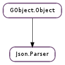

| static | error_quark() |
| static | new() |
| get_current_line() | |
| get_current_pos() | |
| get_root() | |
| has_assignment() | |
| load_from_data(data, length) | |
| load_from_file(filename) | |
| load_from_stream(stream, cancellable) | |
| load_from_stream_async(stream, cancellable, callback, *user_data) | |
| load_from_stream_finish(result) |
None
| Name | Parameters | Return | Description |
|---|---|---|---|
| array-element | Json.Array, int | The ::array-element signal is emitted each time the Json.Parser has successfully parsed a single element of a Json.Array. The array and element index are passed to the signal handlers. | |
| array-end | Json.Array | The ::array-end signal is emitted each time the Json.Parser has successfully parsed an entire Json.Array | |
| array-start | The ::array-start signal is emitted each time the Json.Parser starts parsing a Json.Array | ||
| error | int | The ::error signal is emitted each time a Json.Parser encounters an error in a JSON stream. | |
| object-end | Json.Object | The ::object-end signal is emitted each time the Json.Parser has successfully parsed an entire Json.Object. | |
| object-member | Json.Object, str | The ::object-member signal is emitted each time the Json.Parser has successfully parsed a single member of a Json.Object. The object and member are passed to the signal handlers. | |
| object-start | The ::object-start signal is emitted each time the Json.Parser starts parsing a Json.Object. | ||
| parse-end | The ::parse-end signal is emitted when the parser successfully finished parsing a JSON data stream | ||
| parse-start | The ::parse-start signal is emitted when the parser began parsing a JSON data stream. |
| Name | Type | Access |
|---|---|---|
| parent_instance | GObject.Object | r |
Bases: GObject.Object
JSON data streams parser. The contents of the Json.Parser structure are private and should only be accessed via the provided API.
| Returns: | the newly created Json.Parser. Use GObject.Object.unref () to release all the memory it allocates. |
|---|---|
| Return type: | Json.Parser |
Creates a new Json.Parser instance. You can use the Json.Parser to load a JSON stream from either a file or a buffer and then walk the hierarchy using the data types API.
| Returns: | the currently parsed line, or 0. |
|---|---|
| Return type: | int |
Retrieves the line currently parsed, starting from 1.
This function has defined behaviour only while parsing; calling this function from outside the signal handlers emitted by Json.Parser will yield 0.
| Returns: | the position in the current line, or 0. |
|---|---|
| Return type: | int |
Retrieves the current position inside the current line, starting from 0.
This function has defined behaviour only while parsing; calling this function from outside the signal handlers emitted by Json.Parser will yield 0.
| Returns: | the root Json.Node . The returned node is owned by the Json.Parser and should never be modified or freed. |
|---|---|
| Return type: | Json.Node |
Retrieves the top level node from the parsed JSON stream.
| Returns: | True if there was an assignment, False otherwise. If variable_name is not None it will be set to the name of the variable used in the assignment. The string is owned by Json.Parser and should never be modified or freed. |
|---|---|
| Return type: | bool, variable_name: str |
A JSON data stream might sometimes contain an assignment, like:
var _json_data = { "member_name" : [ ...
even though it would technically constitute a violation of the RFC.
Json.Parser will ignore the left hand identifier and parse the right hand value of the assignment. Json.Parser will record, though, the existence of the assignment in the data stream and the variable name used.
| Parameters: | |
|---|---|
| Raises: | |
| Returns: | True if the buffer was succesfully parser. In case of error, error is set accordingly and False is returned |
| Return type: |
Loads a JSON stream from a buffer and parses it. You can call this function multiple times with the same Json.Parser object, but the contents of the parser will be destroyed each time.
| Parameters: | filename (str) – the path for the file to parse |
|---|---|
| Raises: | GLib.GError |
| Returns: | True if the file was successfully loaded and parsed. In case of error, error is set accordingly and False is returned |
| Return type: | bool |
Loads a JSON stream from the content of filename and parses it. See Json.Parser.load_from_data ().
| Parameters: |
|
|---|---|
| Raises: | |
| Returns: | True if the data stream was successfully read and parsed, and False otherwise |
| Return type: |
Loads the contents of an input stream and parses them.
If cancellable is not None, then the operation can be cancelled by triggering the cancellable object from another thread. If the operation was cancelled, the error Gio.IOErrorEnum.CANCELLED will be set on the passed error.
| Parameters: |
|
|---|
Asynchronously reads the contents of stream.
For more details, see Json.Parser.load_from_stream () which is the synchronous version of this call.
When the operation is finished, callback will be called. You should then call Json.Parser.load_from_stream_finish () to get the result of the operation.
| Parameters: | result (Gio.AsyncResult) – a Gio.AsyncResult |
|---|---|
| Raises: | GLib.GError |
| Returns: | True if the content of the stream was successfully retrieves and parsed, and False otherwise. In case of error, the GLib.Error will be filled accordingly. |
| Return type: | bool |
Finishes an asynchronous stream loading started with Json.Parser.load_from_stream_async ().